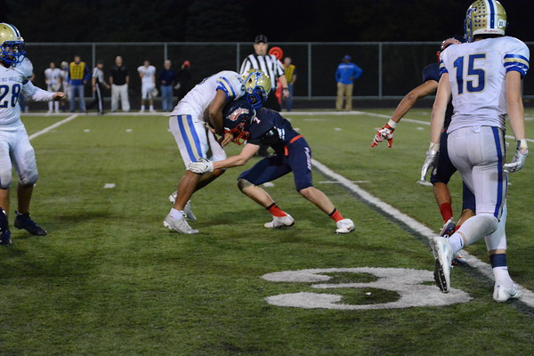

I was born in Minneapolis, MN on March 31, 2000. I am a die hard Minnesota Sports fan! After high school I moved out west to Utah, to attend Brigham Young University.

I work at Awardco as a Sales Rep. I am hoping to get into the Marketing program at BYU's Marriott School of Business. After college, I would like to pursue a career in Med Device.
My favorite hobbies include working out, playing basketball, and playing playing golf. I constantly find myself getting lost in these activities. I think it is very important to participate in these activities with your family and to create memories with them.